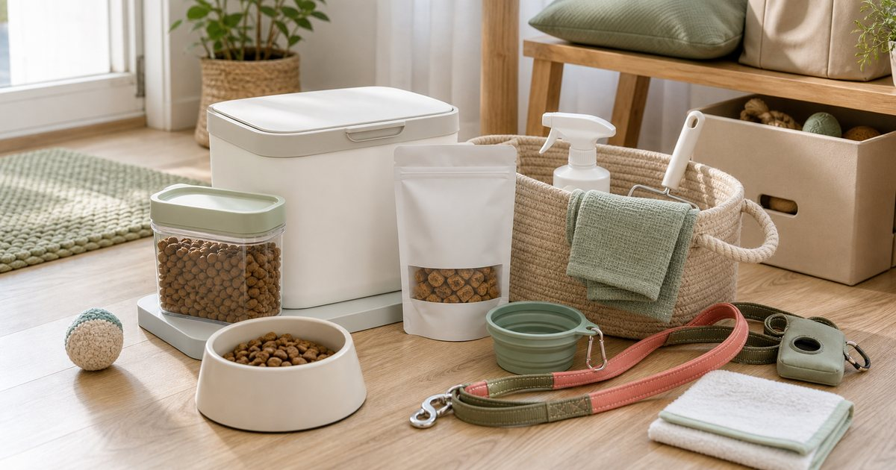

Elite Fashion｜毛孩日常補貨清單：主食、零食、清潔與外出用品怎麼分工
毛孩用品不該只靠活動囤貨。先分主食、零食、清潔、外出與備用品，補貨會更穩，也更容易管理保存期限。

先分五類：主食、零食、清潔、外出、備用
寵物用品一多，最容易混在同一個櫃子裡。把主食、零食、清潔、外出和備用品分成五類，家人也比較知道要拿什麼、補什麼。
可以把 HeroMama、Tails Life、petit 沛蒂、DEHpet、寵物王國與尾巴丘 放在同一個生活情境裡比較，但要先分清楚用途。編輯部會看保存、尺寸、清潔、是否容易收納、是否適合家中成員共同使用，而不是把清單寫成越多越完整。
比較穩妥的順序是先確認 每一類的使用頻率、保存方式與誰負責補貨。常見失誤是 只看優惠囤貨，最後不知道哪些已開封；在 多貓多狗家庭、單人飼主與小宅收納 裡，能被穩定使用、容易補貨、看得懂限制的品項，通常比一次買很多更實際。
- 主食與零食分開標示開封日。
- 外出用品放玄關，不要放食品櫃。
主食與零食要看保存，不只看口味
主食和零食最重要的是保存、開封後管理與份量。若家中空間有限，買大包裝不一定最省心。
可以把 HeroMama、Tails Life、petit 沛蒂與 DEHpet 放在同一個生活情境裡比較，但要先分清楚用途。編輯部會看保存、尺寸、清潔、是否容易收納、是否適合家中成員共同使用，而不是把清單寫成越多越完整。
比較穩妥的順序是先確認 開封後多久吃完、是否需要分裝、家中濕度。常見失誤是 把不同食品全擠在同一盒，找起來又亂又不清楚；在 廚房櫃、寵物餐區與小宅收納 裡，能被穩定使用、容易補貨、看得懂限制的品項，通常比一次買很多更實際。
- 分裝時保留原包裝資訊。
- 份量以實際消耗速度為準。
清潔用品要跟動線走，不跟食品走
清潔用品不應和食品混放。擦拭、地板、外出回家後的用品，放在門口或清潔區會更順。
可以把 寵物王國、尾巴丘、Mommywant 與淨淨 Clean Clean 放在同一個生活情境裡比較，但要先分清楚用途。編輯部會看保存、尺寸、清潔、是否容易收納、是否適合家中成員共同使用，而不是把清單寫成越多越完整。
比較穩妥的順序是先確認 回家後第一個會經過的位置、清潔用品是否容易拿取。常見失誤是 把清潔用品藏太深，每次都懶得拿；在 玄關、陽台、浴室外與寵物活動區 裡，能被穩定使用、容易補貨、看得懂限制的品項，通常比一次買很多更實際。
- 清潔用品和食品分開收納。
- 用完後要能立刻歸位。
外出用品要做成一個小包
牽繩、水碗、拾便袋、濕巾或小零食，適合做成固定外出包。這樣臨時出門不會每次重新找。
可以把 尾巴丘、寵物王國、Mommywant 與 HeroMama 放在同一個生活情境裡比較，但要先分清楚用途。編輯部會看保存、尺寸、清潔、是否容易收納、是否適合家中成員共同使用，而不是把清單寫成越多越完整。
比較穩妥的順序是先確認 外出時間長短、是否需要搭車、用品是否容易清潔。常見失誤是 每次出門都重新組合，結果一定漏一樣；在 週末散步、開車外出與短途旅行 裡，能被穩定使用、容易補貨、看得懂限制的品項，通常比一次買很多更實際。
- 外出包放玄關或車上固定位置。
- 回家後補齊消耗品。
備用品要少而清楚
備用品不是越多越安心。真正需要備的是短時間買不到、臨時會用到、且不容易過期或失效的品項。
可以把 HeroMama、DEHpet、寵物王國與尾巴丘 放在同一個生活情境裡比較，但要先分清楚用途。編輯部會看保存、尺寸、清潔、是否容易收納、是否適合家中成員共同使用，而不是把清單寫成越多越完整。
比較穩妥的順序是先確認 哪些用品斷貨會造成麻煩、哪些只是重複囤放。常見失誤是 把備用品買成倉庫，日常反而更難整理；在 颱風天、出差代養與臨時外宿 裡，能被穩定使用、容易補貨、看得懂限制的品項，通常比一次買很多更實際。
- 備用品定期檢查日期。
- 同類品項不要超過家中能消耗的量。
補貨表比記憶可靠
多人共同照顧寵物時，補貨表比口頭提醒可靠。用簡單表格記錄開封日、剩餘量和下次補貨時間，能減少重複購買。
可以把 HeroMama、Tails Life、petit 沛蒂、DEHpet、寵物王國與尾巴丘 放在同一個生活情境裡比較，但要先分清楚用途。編輯部會看保存、尺寸、清潔、是否容易收納、是否適合家中成員共同使用，而不是把清單寫成越多越完整。
比較穩妥的順序是先確認 誰負責補貨、哪一天盤點、哪些品項需要先吃先用。常見失誤是 每個人都以為別人會補，最後臨時缺貨；在 家庭共同照顧、多寵家庭與工作忙碌的飼主 裡，能被穩定使用、容易補貨、看得懂限制的品項，通常比一次買很多更實際。
- 每週固定一次盤點。
- 補貨表只列常用品，不列所有想買的東西。
FAQ
寵物食品可以大量囤貨嗎？
要看保存期限、開封後消耗速度和家中收納環境。空間有限時，少量穩定補貨通常更好管理。
清潔用品可以和食品放一起嗎？
不建議。清潔用品、外出用品和食品應分區收納，避免使用時混亂。
外出用品怎麼避免忘記帶？
可以做成固定外出包，放在玄關或車上，回家後補齊消耗品。
下一步建議
如果你想讓毛孩補貨更有秩序，可以先把主食、零食、清潔和外出用品分成固定區域。
重要警語
本文為一般寵物用品收納與補貨情境整理，不構成營養、照護或個別選品建議。寵物食品與用品請依商品標示、寵物狀況與專業建議使用。
本文含品牌／商品導購連結；若你透過部分商品連結前往選購，Elite Fashion 可能取得合作收益。本文仍以編輯判斷與使用情境整理為主，價格、規格、活動與庫存請以商品頁公告為準。